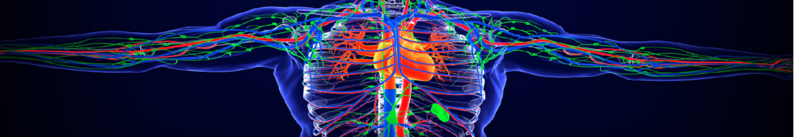

Original Blackboard item · _7758454_1

This entire module contains a total of 2.5 hours of video lessons plus activities that reinforce your knowledge.
Hyperlipidaemia is the silent killer. In this chapter, we learn about how they contribute to the disease process (atherosclerosis) that leads to myocardial infarction, stroke, and loss of limbs, as well as our medications that can help prevent its development.
The objectives for this chapter include"
The Notes and PowerPoint for this chapter can be found directly below:
18/06/2025
Pharmacology of the
Cardiovascular System
Hyperlipidaemia
Ken Wojcikowski
1
Pharmacology of the
Cardiovascular System:
Hyperlipidaemia
Dr Ken Wojcikowski
2
kjhkjhlkdfs
Medications of the Cardiovascular
System: Medications for Altering
PHAR2001_2_5_1 Lipid Levels
Lesson 1:
Understanding Lipids
3
1
18/06/2025
Objectives for the
first three lessons
• Define the terms hyperlipidaemia,
dyslipidaemia, HDL and LDL
• Describe atherosclerosis, including the
risk factors, and potential consequences
of plaques on the arteries
4
Lipids
Tri(acyl)glycerides
Used in energy metabolism
ONE glycerol and three fatty acids
Phospholipids
Important structural constituents of
lipoproteins, blood- clotting components, the
myelin sheath, and cell membranes
Cholesterol
Chemical activity similar to other lipid
substances
Hyperlipidaemia
Elevated levels of one or all of the above
5
Types of Lipoproteins;
Classified by Density
• Chylomicrons (transfer lipids from GIT to liver)
• Very–low-density lipoprotein (VLDL)
• Carries large amounts of triglycerides
• Intermediate-density lipoprotein (IDL)
• Low-density lipoprotein (LDL)
• Main carrier of cholesterol from the liver to the cells
• High-density lipoprotein (HDL)
• The good protein
Schematic drawing
of HDL, a protein
6
2
18/06/2025
The common lipid
profile screening
includes:
• HDL: a protein
• LDL: a protein
• Triglycerides: a type
of fat
• Total Cholesterol:
both HDL and LDL
7
Dyslipidaemia/hyperlipidaemia
Virtually synonymous
• High levels of lipids in the blood (but dyslipidaemia
may also describe low amounts of HDL)
• Secondary hyperlipidaemia (caused by multiple risk factors)
• Primary/familial hypercholesterolemia
• Primary/familial hypertriglyceridemia
Lipid NORMAL Blood level
LDL (Bad) <2.0 mmol/L
HDL (Good) >1.0 mmol/L
Cholesterol <4.0 mmol/L
Triglycerides <1.5 mmol/L
8
kjhkjhlkdfs
Medications of the Cardiovascular
System:
Medications for Altering Lipid Levels
PHAR2001_2_5_1
Lesson 2:
Understanding Atherosclerosis
9
3
18/06/2025
Xanthelasma
http://cosmetic-mole-surgery.com/cosmetic-treatments/
10
Copyright 2018
Mosby
11
kjhkjhlkdfs
Medications of the Cardiovascular
System:
Medications for Altering Lipid Levels
PHAR2001_2_5_1
Lesson 3:
Understanding Atherosclerosis (cont.)
12
4
18/06/2025
Copyright 2018
Mosby
13
14
Atherosclerosis of the Coronary
Artery
15
5
18/06/2025
Pharmacology of the
Cardiovascular System
Hyperlipidaemia
Medications
Ken Wojcikowski
16
Objective the
remaining lessons
• Identify and describe the therapeutic
actions and major side effects of common
pharmacological agents used in the
treatment of dyslipidaemia or
hyperlipidaemia.
17
kjhkjhlkdfs
Medications of the Cardiovascular
System:
Medications for Altering Lipid Levels
PHAR2001_2_5_1
Lesson 4:
HMG-CoA reductase inhibitors
(the statins)
18
6
18/06/2025
HMG-CoA reductase inhibitors
(the statins)
• All end in the suffix …statin
• Atorvastatin (Lipitor),
• Simvastatin (Zocor, Simvar)
• Lovastatin (Mevacor)
HMG-CoA reductase is the enzyme that the liver uses to make
cholesterol
• BONUS!: They also have anti-inflammatory and
antithrombotic effects, stabilising plaques and preventing
their rupture and increase longevity
19
HMG-CoA reductase inhibitors
(the statins)
Adverse effects:
• GI disturbances,
• Possible rhabdomyolysis (rare, but may cause
acute renal failure, so be aware of this!)
• Tea coloured urine and muscle soreness are the first
signs
Contraindications:
• Pregnancy Category D
• Liver disease
20
HMG-CoA reductase inhibitors
(the statins)
Check recent evidence before prescribing one statin over the other
These do vary greatly in efficacy and the one that is associated with
the greatest increase in longevity in recent studies should be chosen
(unless the safety profile makes it inappropriate)!
Not to be used by women of reproductive years
Do not use in liver damage
Monitor Liver Function Test (LFT) in all patients
Raised AST and ALT means liver damage
21
7
18/06/2025
kjhkjhlkdfs
Medications of the Cardiovascular
System:
Medications for Altering Lipid Levels
PHAR2001_2_5_1
Lesson 5:
Medications that affect the absorption and
excretion of cholesterol
22
Cholesterol absorption inhibitors
• Cholesterol absorption inhibitors (relatively new)
• Ezetimibe (Ezetrol) eh zet im ib
• Limit absorption of cholesterol in the small intestines
• Liver increases uptake of systemic cholesterol
• Adverse effects: GI disturbances
• Unlike most other combinations of lipid
normalising medications, Ezetimibe can
be combined with statins
• Most other combinations of lipid
lowering drugs are contraindicated
23
Bile acid sequestrants
Cholestyramine (Questran) chole steera meen
• Like Styrofoam – sucks up the bile salts in the small
intestines
• Bile salts excreted instead of reused
The initial decreases in LDL may be negated by the liver
The medication tastes terrible
The medication binds fat soluble vitamins, D, K, E and A
The medication causes constipation
24
8
18/06/2025
Bile acid sequestrants
Cholestyramine (Questran)
Contraindications:
• pregnancy (decrease the absorption of fats and fat soluble
vitamins; babies need fats and fat soluble vitamins);
• do not consume with any drugs as it may decrease
absorption
Good news – it is useful in decreasing the diarrhea associated
with Crohn’s disease and along with antibiotic therapy in
treatment of GIT Clostridium infections (binds the toxins and
decreases the diarrhea)
25
kjhkjhlkdfs
Medications of the Cardiovascular
System:
Medications for Altering Lipid Levels
PHAR2001_2_5_1
Lesson 6:
Nicotinic Acid
26
Nicotinic acid
Vitamin B3; (Niaspan)
• Huge dose of nicotinic acid (1-3 grams daily)
• Decreases formation of free fatty acids in
adipose tissue
• Not suitable in all types of hyperlipidaemia, but
can decrease triglycerides by 25%
• Decreases LDL and increases HDL by 30%
Not to be used in
• Liver disease, Diabetes mellitus,
• Gout or Stomach ulcers
27
9
18/06/2025
Nicotinic acid
Adverse effects include flushing of the
ears and face, pruritus, GIT ulcers,
nausea, diarrhoea, heartburn, and
possible hypotension
• May need to start off with small dose
to reduce flushing
• To reduce flushing: Titrate dose,
take just after meals, or suggest an
aspirin 30 minutes prior
Nicotinic acid not to be taken with
• Statins
• Fibrates Flushing/ (burning feeling) of the ears is a common side effect
28
kjhkjhlkdfs
Medications of the Cardiovascular
System:
Medications for Altering Lipid Levels
PHAR2001_2_5_1
Lesson 7:
Fibrates
29
Fibrates
Largely superseded by statins and
other newer medicines
Increase the breakdown of lipids in
tissues
• Fenofibrate (Lipidil; the example
to know)
LDL sometimes rises but is partially
offset by increases in HDL, an
inhibition of platelet aggregation and
an increase in fibrinolysis
30
10
18/06/2025
Fibrates
Adverse effects:
• Abdominal pain, nausea, diarrhoea
• Myalgia (muscle pain) may be the first symptom
of rhabdomyolysis
• Gall stones
Individuals should be advised to speak to their doctor if they experience
muscle pain, weakness and tenderness as these signs may be indicative
of myalgia rhabdomyolysis, not myalgia)
Contraindicated in those taking:
• Warfarin
• Statins
• Nicotinic Acid
31
kjhkjhlkdfs
Medications of the Cardiovascular
System:
Medications for Altering Lipid Levels
PHAR2001_2_5_1
Lesson 8:
Special notes about lipid lowering drugs
32
Special notes about lipid lowering drugs
• Always ‘monitor the liver’ when giving hypercholesterolaemic drugs
• How? The Liver Function Test (LFT, specific enzymes AST, ALT)
• Most combinations of lipid lowering drugs are contraindicated
• Exception to the rule: Ezetimibe can be combined with statins
• None of the lipid normalizing drugs are ideal during pregnancy.
• At one time statins were thought to be teratogenic but are now
listed as pregnancy category D
• In addition, babies need cholesterol !!!!!!!!!!
• Dietary approaches are more suitable than drugs during pregnancy
if that is possible (those with familial hypercholesterolemia do not
respond to lifestyle changes very well).
33
11
18/06/2025
References
• McCance K, Huether S: Pathophysiology: The biological basis
for disease in adults and children 8th ed. Mosby St Louis 2018
• Marieb EN et al. Human Anatomy and Physiology 6th ed.
Pearson Education publishing as Benjamin Cummings 2004
• Thibodeau G: Anatomy and physiology 5th ed Mosby St. Louis
2003
• http://cosmetic-mole-surgery.com/cosmetic-treatments/
• Royalty free images from Shutterstock
• The PowerPoint and associated Video were edited and
produced by Dr. Ken Wojcikowski
34
12
## ppt/notesSlides/notesSlide1.xml
6
## ppt/notesSlides/notesSlide2.xml
7
## ppt/notesSlides/notesSlide3.xml
8
## ppt/notesSlides/notesSlide4.xml
10
## ppt/notesSlides/notesSlide5.xml
34
## ppt/slides/slide1.xml
Ken Wojcikowski
Hyperlipidaemia
Pharmacology of the Cardiovascular System
## ppt/slides/slide2.xml
Pharmacology of the Cardiovascular System:
Hyperlipidaemia
Dr Ken Wojcikowski
## ppt/slides/slide3.xml
kjhkjhlkdfs
PHAR2001_2_5_1
Medications of the Cardiovascular System: Medications for Altering Lipid Levels
Lesson 1:
Understanding Lipids
## ppt/slides/slide4.xml
Objectives for the first three lessons
Define the terms hyperlipidaemia, dyslipidaemia, HDL and LDL
Describe atherosclerosis, including the risk factors, and potential consequences of plaques on the arteries
## ppt/slides/slide5.xml
Lipids
Tri(acyl)glycerides
Used in energy metabolism
ONE
glycerol and
three fatty acids
Phospholipids
Important structural constituents of lipoproteins, blood- clotting components, the myelin sheath, and cell membranes
Cholesterol
Chemical activity similar to other lipid substances
Hyperlipidaemia
Elevated levels of one or all of the above
## ppt/slides/slide6.xml
Types of
Lipo
proteins
;
Classified by Density
Chylomicrons
(transfer lipids from GIT to liver)
Very–low-density lipoprotein
(VLDL)
Carries large amounts of triglycerides
Intermediate-density lipoprotein
(IDL)
Low-density lipoprotein
(LDL)
Main carrier of cholesterol from the liver to the cells
High-density lipoprotein
(HDL)
The good protein
Schematic drawing of HDL, a
protein
## ppt/slides/slide7.xml
The common lipid profile screening includes:
HDL: a protein
LDL: a protein
Triglycerides: a type of fat
Total Cholesterol: both HDL and LDL
## ppt/slides/slide8.xml
Dyslipidaemia/hyperlipidaemia
Virtually synonymous
High levels of lipids in the blood (but dyslipidaemia may also describe low amounts of HDL)
Secondary hyperlipidaemia (caused by multiple risk factors)
Primary/familial hypercholesterolemia
Primary/familial hypertriglyceridemia
Lipid
NORMAL Blood level
LDL (Bad)
HDL (Good)
Cholesterol
Triglycerides
<2.0
mmol
/L
>1.0
mmol
/L
<4.0
mmol
/L
<1.5
mmol
/L
## ppt/slides/slide9.xml
kjhkjhlkdfs
PHAR2001_2_5_1
Medications of the Cardiovascular System:
Medications for Altering Lipid Levels
Lesson 2:
Understanding Atherosclerosis
## ppt/slides/slide10.xml
Xanthelasma
http://cosmetic-mole-surgery.com/cosmetic-treatments
/
## ppt/slides/slide11.xml
Copyright 2018 Mosby
## ppt/slides/slide12.xml
kjhkjhlkdfs
PHAR2001_2_5_1
Medications of the Cardiovascular System:
Medications for Altering Lipid Levels
Lesson 3:
Understanding Atherosclerosis (cont.)
## ppt/slides/slide13.xml
Copyright 2018 Mosby
## ppt/slides/slide14.xml
## ppt/slides/slide15.xml
Atherosclerosis of the Coronary Artery
## ppt/slides/slide16.xml
Ken Wojcikowski
Hyperlipidaemia Medications
Pharmacology of the Cardiovascular System
## ppt/slides/slide17.xml
Objective the remaining lessons
Identify and describe the therapeutic actions and major side effects of common pharmacological agents used in the treatment of dyslipidaemia or hyperlipidaemia.
## ppt/slides/slide18.xml
kjhkjhlkdfs
PHAR2001_2_5_1
Medications of the Cardiovascular System:
Medications for Altering Lipid Levels
Lesson 4:
HMG-CoA reductase inhibitors (the statins)
## ppt/slides/slide19.xml
HMG-CoA reductase inhibitors
(the statins)
All end in the suffix …statin
Atorvastatin (Lipitor),
Simvastatin (
Zocor,
Simvar
)
Lovastatin (
Mevacor
)
HMG-CoA reductase is the enzyme that the liver uses to make cholesterol
BONUS!: They also have anti-inflammatory and antithrombotic effects, stabilising plaques and preventing their rupture and increase longevity
## ppt/slides/slide20.xml
HMG-CoA reductase inhibitors
(the statins)
Adverse effects:
GI disturbances,
Possible rhabdomyolysis (rare, but may cause acute renal failure, so be aware of this!)
Tea coloured urine and muscle soreness are the first signs
Contraindications:
Pregnancy Category D
Liver disease
## ppt/slides/slide21.xml
HMG-CoA
reductase
inhibitors (the statins)
Check recent evidence before prescribing one statin over the other
These do vary greatly in efficacy and the one that is associated with the greatest increase in longevity in recent studies should be chosen (unless the safety profile makes it inappropriate)!
Not to be used by women of reproductive years
Do not use in liver damage
Monitor Liver Function Test (LFT) in all patients
Raised AST and ALT means liver damage
## ppt/slides/slide22.xml
kjhkjhlkdfs
PHAR2001_2_5_1
Medications of the Cardiovascular System:
Medications for Altering Lipid Levels
Lesson 5:
Medications that affect the absorption and excretion of cholesterol
## ppt/slides/slide23.xml
Cholesterol absorption inhibitors
Unlike most other combinations of lipid normalising medications, Ezetimibe can be combined with statins
Most other combinations of lipid lowering drugs are contraindicated
Cholesterol absorption inhibitors (relatively new)
Ezetimibe (
Ezetrol
) eh
zet
im
ib
Limit absorption of cholesterol in the small intestines
Liver increases uptake of systemic cholesterol
Adverse effects: GI disturbances
## ppt/slides/slide24.xml
Bile acid sequestrants
Chole
styra
mine
(Questran) chole
steera
meen
Like
Styro
foam – sucks up the bile salts in the small intestines
Bile salts excreted instead of reused
The initial decreases in LDL may be negated by the liver
The medication tastes terrible
The medication binds fat soluble vitamins, D, K, E and A
The medication causes constipation
## ppt/slides/slide25.xml
Bile acid sequestrants
Chole
styra
mine
(Questran)
Contraindications:
pregnancy (decrease the absorption of fats and fat soluble vitamins; babies need fats and fat soluble vitamins);
do not consume with any drugs as it may decrease absorption
Good news – it is useful in decreasing the diarrhea associated with Crohn’s disease and along with antibiotic therapy in treatment of GIT Clostridium infections (binds the toxins and decreases the diarrhea)
## ppt/slides/slide26.xml
kjhkjhlkdfs
PHAR2001_2_5_1
Medications of the Cardiovascular System:
Medications for Altering Lipid Levels
Lesson 6:
Nicotinic Acid
## ppt/slides/slide27.xml
Nicotinic acid
Vitamin B3; (Niaspan)
Huge dose of nicotinic acid (1-3 grams daily)
Decreases formation of free fatty acids in adipose tissue
Not suitable in all types of hyperlipidaemia, but can decrease triglycerides by 25%
Decreases LDL and increases HDL by 30%
Not to be used in
Liver disease, Diabetes mellitus,
Gout or Stomach ulcers
## ppt/slides/slide28.xml
Nicotinic acid
Adverse effects include flushing of the ears and face
, pruritus, GIT ulcers, nausea, diarrhoea, heartburn, and possible hypotension
May need to start off with small dose to reduce flushing
To reduce flushing: Titrate dose, take just after meals, or suggest an aspirin 30 minutes prior
Nicotinic acid not to be taken with
Statins
Fibrates
Flushing/ (burning feeling) of the ears is a common side effect
## ppt/slides/slide29.xml
kjhkjhlkdfs
PHAR2001_2_5_1
Medications of the Cardiovascular System:
Medications for Altering Lipid Levels
Lesson 7:
Fibrates
## ppt/slides/slide30.xml
Fibrates
Largely superseded by statins and other newer medicines
Increase the breakdown of lipids in tissues
Fenofibrate
(
Lipidil
; the example to know)
LDL sometimes rises but is partially offset by increases in HDL, an inhibition of platelet aggregation and an increase in fibrinolysis
## ppt/slides/slide31.xml
Fibrates
Adverse effects:
Abdominal pain, nausea, diarrhoea
Myalgia (muscle pain) may be the first symptom of rhabdomyolysis
Gall stones
Individuals should be advised to speak to their doctor if they experience muscle pain, weakness and tenderness as these signs may be indicative of myalgia rhabdomyolysis, not myalgia)
Contraindicated in those taking:
Warfarin
Statins
Nicotinic Acid
## ppt/slides/slide32.xml
kjhkjhlkdfs
PHAR2001_2_5_1
Medications of the Cardiovascular System:
Medications for Altering Lipid Levels
Lesson 8:
Special notes about lipid lowering drugs
## ppt/slides/slide33.xml
Special notes about lipid lowering drugs
Always ‘monitor the liver’ when giving
hypercholesterolaemic
drugs
How? The
Liver Function Test
(LFT, specific enzymes AST, ALT)
Most combinations of lipid lowering drugs are contraindicated
Exception to the rule: Ezetimibe can be combined with statins
None of the lipid normalizing drugs are ideal during pregnancy.
At one time statins were thought to be teratogenic but are now listed as pregnancy category D
In addition, babies need cholesterol !!!!!!!!!!
Dietary approaches are more suitable than drugs during pregnancy if that is possible (those with familial hypercholesterolemia do not respond to lifestyle changes very well).
## ppt/slides/slide34.xml
.
McCance K,
Huether
S: Pathophysiology: The biological basis for disease in adults and children 8
th
ed. Mosby St Louis 2018
Marieb
EN et al. Human Anatomy and Physiology 6th ed. Pearson Education publishing as Benjamin Cummings 2004
Thibodeau G: Anatomy and physiology 5th ed Mosby St. Louis 2003
http://cosmetic-mole-surgery.com/cosmetic-treatments/
Royalty free images from Shutterstock
The PowerPoint and associated Video were edited and produced by Dr. Ken Wojcikowski
References